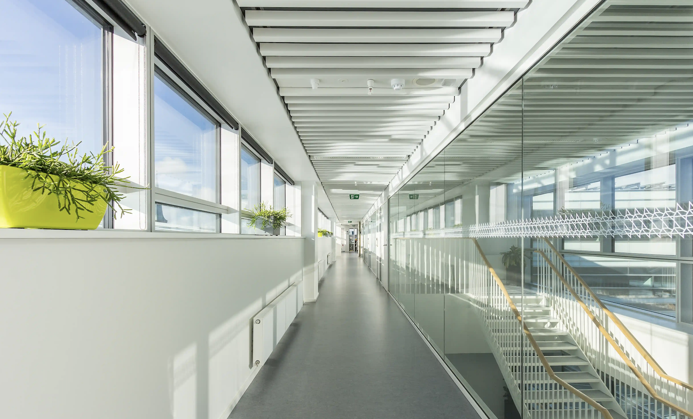
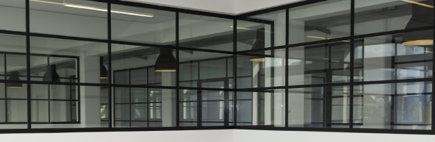

SYSTEMER

GLASSYSTEMER
- Vores glasvægge fås i aluminium, stål samt rammer af træ.
- Lys er en livsnødvendig energikilde og med vores glasvægge opnås en lys og let rumopdeling
- Med glasvægge fra Sesam opnås en lys og let rumopdeling. Det er også tilfældet med det nye glassystem FG Park, der er designet til at matche indretninger.
- Der er tale om fuldglasvægge med påmonterede sprosser, som fastgøres med aluminium-profiler i top og bund samt ved vægtilslutningen. Vægtykkelsen kan variere efter individuelle behov, samt lyd reduktionen tilsvarende. På et 12,8mm. lydlamineret glas op til 40dB. Det er muligt at vælge både glasrammedør og skydedør.

VÆGSYSTEMER

Høj service og kvalitet er nøglebegreber for den måde vi driver forretning på. Hvis det lyder som noget i mangler eller mangler at få lavet, så udfyld denne kontaktformular og hør mere om den specifikke opgave i skal have hjælp til, samt få et godt tilbud!